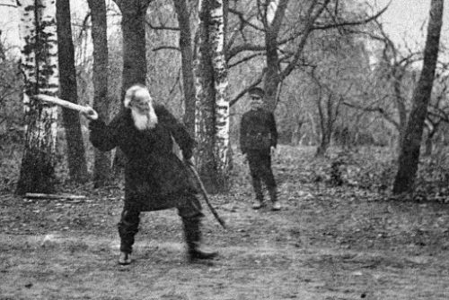

Национальный вид спорта
В Советской России игра в городки считалась пролетарской и противопоставлялась «буржуазным» играм типа кеглей, гольфа, бильярда, а первое время даже и футбола. Коммунистические вожди с удовольствием демонстрировали свое пристрастие к городкам. Вспоминая о своей гимназической юности, Н. И. Бухарин писал в «Автобиографии»: «В то же время я был в постоянном общении с так называемыми “уличными мальчишками”, о чем отнюдь не сожалею. “Бабки”, городки, драки и т. д. были непременной принадлежностью этой жизни». Детские привычки и пристрастия сохранялись и в зрелом возрасте. В свободное время партийные лидеры охотно резались в городки. По рассказу дочери Бухарина, именно за игрой в городки В. И. Ленин «сосватал» ее отца за тогда молоденькую корреспондентку газеты «Правда» Э. И. Гурвич: «Наступила очередь бросать биту моей маме. Она бросила совершенно непрофессионально и была этим смущена. Ленин по этому поводу сказал: “Я же ведь говорил, что рано еще созывать международный женский конгресс”. После случившегося конфуза Бухарин сложил самую сложную фигуру, которая называется “змея” или “змейка”, когда все городошины лежат на поле. После того как Бухарин пробил совершенно удачно, Ленин произнес: “Что, Николай Иванович, скоро будем Геменея петь?” И Бухарин покраснел от самых волос на голове до пяток. Вот такое сватовство» .

Сам «вождь мирового пролетариата» запомнился его окружению как заядлый городошник. Уже находясь на лечении в Горках, когда у него появилось много свободного времени, Ленин регулярно занимался городками. По воспоминаниям А.М. Сысоевой, домашней работнице в семье Ульяновых, «В Горках он (Ленин) вечерком ходил с товарищами, которые в то время находились на отдыхе в санатории, и со служащими санатория и шоферами играть в рюхи. Владимир Ильич с увлечением играл в течение одного-полутора часов».
Воспоминания о И. В. Сталине также преисполнены городошной тематикой. Посещавший его на подмосковной даче Е. Кацман рассказывал: «Сталин играл лучше всех [своих соратников]. Его палка настигала сверху и разбивала фигуры. Когда Сталин прицеливался с палкой, его лицо становилось подчеркнуто энергичным и красивым…» Добавим, что в жизни Сталин обладал далеко не благообразной внешностью. Но как преображает человека любимая игра! Похоже, всевластный генсек ВКП(б) испытывал на умение играть в городки всех своих гостей, будь то на даче в Подмосковье или в санатории в Сочи. По воспоминаниям авиаконструктора С. В. Ильюшина, бывшего на даче Сталина в 1933 г., после трехчасового совещания, в котором, помимо Ильюшина, участвовали нарком обороны К. Е. Ворошилов и нарком авиастроения П. И. Баранов, все вышли в сад и по предложению Сталина стали состязаться в городки. Сталин с Ворошиловым на одной стороне, а Ильюшин с Барановым — на другой. Сталин бил очень метко, и противная сторона оказалась в проигрыше .
Еще в детстве увлекся игрой в городки академик И. П. Павлов, проживший 86 лет и до конца жизни активно занимавшийся физическими упражнениями. В родной Рязани будущий академик «резался в рюхи» на дворе со своими братьями и соседскими мальчишками. Став ученым мирового уровня, Павлов сохранил пристрастие к игре в городки. На многочисленных фотографиях, сделанных на даче в Колтушах в 20-е и 30-е годы XX века, мы видим сребробородого академика, замахивающегося битою и бросающего ее в цель. На даче у Ивана Петровича и его сотрудников игра в городки завязывалась в любые часы дня. Но наряду с этой, так сказать, случайной игрой, Павлов организовывал среди дачных жителей целые матчи, которые продолжались в течение всего дачного сезона. Обычно в них участвовали две постоянные группы: одна состояла из людей старшего поколения, другая — младшего. Во главе старшей группы всегда стоял И. П. Павлов, а младшей группой руководил его старший сын Воля, также заядлый городошник. Смотреть на соревнование собиралась вся округа. Результаты каждого матча аккуратно заносились в журнал, а в конце сезона определялись победители всего турнира. На одной из фотографий запечатлен момент этого «апофеоза»: посредине сидит Иван Петрович, а вокруг него стоит группа игроков с поднятыми городошными битами, образующими над ним подобие шатра.
В воспоминаниях племянника академика А. Ф. Павлова читаем: «Я играл очень неважно, а Иван Петрович звал меня “мазилой”, так как я мог своим ударом только развалить городок, почему бить по нему первым мне не давали, а большей часть вообще ни во что не попадал… Если Иван Петрович, Дмитрий Петрович и Воля играли отлично, то первенство среди них держал все таки Иван Петрович, чем очень дорожил и гордился. Бил он всегда не правой, а левой рукой, потому и считался левшой (известно, что и все операции на животных, даже самые сложные, он проводил только левой рукой). Конечно, он прекрасно владел и правой рукой, но левая у него была более развита» .
Впервые в Колтушах И. П. Павлов появился, когда ему было уже 75 лет. Обитатели дачного поселка были поражены тем, что такой старик играет в городки, да еще с таким увлечением! А когда они увидели, что он выигрывает у всех своих противников, даже у молодых и крепких, их изумлению не было предела. Очевидцы говорят, что при этом И. П. Павлов страдал от неправильно сросшегося перелома правого бедра, что мешало ему при броске прочно опереться на вставленную вперед правую ногу, отчего бита летела неточно. Промахнувшись, академик с досадой размахивал руками и бранился: «Ах, проклятая нога!» Недуг этот мешал ему также нагибаться и поднимать с земли свои палки. Однако он решительно протестовал, если ему помогали, и только после долгих уговоров соглашался, чтобы ему приносили палки.
Благодаря центральным газетам, которые не уставали подчеркивать, что ведущий советский ученый увлечен пролетарской игрой, вся страна знала, что И. П. Павлов играет в городки. Какая-то спортивная делегация, посетившая академика в Колтушах, преподнесла ему в подарок набор выточенных из прочного дерева бит и рюх для его любимой игры, а также макет городошной площадки. До сих пор музей Павлова в Колтушах имеет специальную экспозицию, посвященную этому увлечению академика, которое он пронес через всю свою жизнь. В память о ученом-городошнике Федерация городошного спорта Ленинграда стала проводить ежегодные соревнования среди команд ветеранов «Кубок академика И. П. Павлова».
Как показатель повышенного в обществе интереса к городкам и их возросшего значения среди советских видов спорта можно расценивать монументальную гипсовую скульптуру «Городошник», созданную в 1927 г. М. Г. Манизером. Со времен аналогичного творения скульптора А. А. Иванова прошло почти сто лет. Советский гипсовый городошник отличается от «Парня, играющего в городки» большим динамизмом в движениях, грациозностью форм, а главное, более резким замахом руки, держащей биту. Так же динамично и импульсивно развивались городки в первые десятилетия Советской власти. Они пережили как бы второе рождение.
Советская власть придала игре в городки официальный статус. 20 августа 1923 г. были утверждены «Единые правила игры в городки», составленные методистом физкультуры С. В. Сысоевым. Этот день и считается днем рождения городошного спорта.